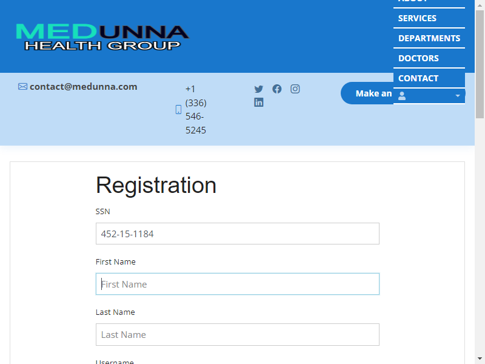

Started
Sep 28, 2022 11:08:51 PM
Ended
Sep 28, 2022 11:09:36 PM
Features Passed
1
Features Failed
2
Features
Scenarios
Steps
Timeline
Tags
| Name | Passed | Failed | Skipped | Others | Passed % |
|---|---|---|---|---|---|
| @api | 1 | 1 | 0 | 0 | 50% |
| @ui | 1 | 1 | 0 | 0 | 50% |
| @db | 8 | 0 | 0 | 0 | 100% |
| @demo | 10 | 2 | 0 | 0 | 83.333% |
System/Environment
| Name | Value |
|---|---|
| Engineer | Zafer Koek |
| Project | com.medunna |
| Browser | Google Chrome |
| OS | windows |
-
API_US001
11:08:51 PM / 00:00:15:060 Fail
API_US001
09.28.2022 11:08:51 PM 09.28.2022 11:09:06 PM 00:00:15:060 · #test-id=1PassAPI kullanarak kayitli kisiler olusturun ve dogrulayinGiven Kullanici kayit icin data olustururAnd Kullanici kayit icin post request gonderirThen Kullanici API kayitlirini dogrularstepdefinitions.ALL_Hooks.tearDown(io.cucumber.java.Scenario)passedAPI kullanarak kayitli kisiler olusturun ve dogrulayin FailAPI kullanarak kayitli kisiler olusturun ve dogrulayinGiven Kullanici kayit icin data olustururAnd Kullanici kayit icin post request gonderirThen Kullanici API kayitlirini dogrularstepdefinitions.ALL_Hooks.tearDown(io.cucumber.java.Scenario)
FailAPI kullanarak kayitli kisiler olusturun ve dogrulayinGiven Kullanici kayit icin data olustururAnd Kullanici kayit icin post request gonderirThen Kullanici API kayitlirini dogrularstepdefinitions.ALL_Hooks.tearDown(io.cucumber.java.Scenario) -
DB_US001
11:08:59 PM / 00:00:25:280 Pass
DB_US001
09.28.2022 11:08:59 PM 09.28.2022 11:09:24 PM 00:00:25:280 · #test-id=8Passuser verified number of student table rowsGiven user connects to the databaseGiven user connects to the student tableAnd print the total row count and verifystepdefinitions.ALL_Hooks.tearDown(io.cucumber.java.Scenario)passeduser verified number of student table rows Passuser verified first row in student tableGiven user connects to the databaseGiven user connects to the student tableAnd print first student name and verifystepdefinitions.ALL_Hooks.tearDown(io.cucumber.java.Scenario)passeduser verified first row in student table
Passuser verified first row in student tableGiven user connects to the databaseGiven user connects to the student tableAnd print first student name and verifystepdefinitions.ALL_Hooks.tearDown(io.cucumber.java.Scenario)passeduser verified first row in student table Passuser verified last row in student tableGiven user connects to the databaseGiven user connects to the student tableAnd print last student name and verifystepdefinitions.ALL_Hooks.tearDown(io.cucumber.java.Scenario)passeduser verified last row in student table
Passuser verified last row in student tableGiven user connects to the databaseGiven user connects to the student tableAnd print last student name and verifystepdefinitions.ALL_Hooks.tearDown(io.cucumber.java.Scenario)passeduser verified last row in student table Passuser verified spesific row in student tableGiven user connects to the databaseGiven user connects to the student tableAnd print spesific student name and verifystepdefinitions.ALL_Hooks.tearDown(io.cucumber.java.Scenario)passeduser verified spesific row in student table
Passuser verified spesific row in student tableGiven user connects to the databaseGiven user connects to the student tableAnd print spesific student name and verifystepdefinitions.ALL_Hooks.tearDown(io.cucumber.java.Scenario)passeduser verified spesific row in student table Passuser verified number of student table rowsGiven user connects to the databaseGiven user connects to the student tableAnd print the total row count and verifystepdefinitions.ALL_Hooks.tearDown(io.cucumber.java.Scenario)passeduser verified number of student table rows
Passuser verified number of student table rowsGiven user connects to the databaseGiven user connects to the student tableAnd print the total row count and verifystepdefinitions.ALL_Hooks.tearDown(io.cucumber.java.Scenario)passeduser verified number of student table rows Passuser verified first row in student tableGiven user connects to the databaseGiven user connects to the student tableAnd print first student name and verifystepdefinitions.ALL_Hooks.tearDown(io.cucumber.java.Scenario)passeduser verified first row in student table
Passuser verified first row in student tableGiven user connects to the databaseGiven user connects to the student tableAnd print first student name and verifystepdefinitions.ALL_Hooks.tearDown(io.cucumber.java.Scenario)passeduser verified first row in student table Passuser verified last row in student tableGiven user connects to the databaseGiven user connects to the student tableAnd print last student name and verifystepdefinitions.ALL_Hooks.tearDown(io.cucumber.java.Scenario)passeduser verified last row in student table
Passuser verified last row in student tableGiven user connects to the databaseGiven user connects to the student tableAnd print last student name and verifystepdefinitions.ALL_Hooks.tearDown(io.cucumber.java.Scenario)passeduser verified last row in student table Passuser verified spesific row in student tableGiven user connects to the databaseGiven user connects to the student tableAnd print spesific student name and verifystepdefinitions.ALL_Hooks.tearDown(io.cucumber.java.Scenario)passeduser verified spesific row in student table
Passuser verified spesific row in student tableGiven user connects to the databaseGiven user connects to the student tableAnd print spesific student name and verifystepdefinitions.ALL_Hooks.tearDown(io.cucumber.java.Scenario)passeduser verified spesific row in student table -
UI_US001
11:09:06 PM / 00:00:29:603 Fail
UI_US001
09.28.2022 11:09:06 PM 09.28.2022 11:09:36 PM 00:00:29:603 · #test-id=59FailGecerli bir SSN, 3. ve 5. rakamdan sonra "-" icermeli ve 9 rakamdan olusmalidir.Given Medunna ana sayfasina giderAnd Ana sayfa giris ikonuna tiklarAnd Register butonuna tiklarAnd SSN kutusuna uygun ssn girerStep skippedThen Hata mesajinin cikmadigini test ederStep skippedstepdefinitions.ALL_Hooks.tearDown(io.cucumber.java.Scenario)PassGecerli bir SSN, 3. ve 5. rakamdan sonra "-" icermeli ve 9 rakamdan olusmalidir.Given Medunna ana sayfasina giderAnd Ana sayfa giris ikonuna tiklarAnd Register butonuna tiklarAnd SSN kutusuna uygun ssn girerThen Hata mesajinin cikmadigini test ederstepdefinitions.ALL_Hooks.tearDown(io.cucumber.java.Scenario)passedGecerli bir SSN, 3. ve 5. rakamdan sonra "-" icermeli ve 9 rakamdan olusmalidir.
-
@api
2 tests
@api
1 passed 1 failedStatus Timestamp TestName Pass 23:08:51 PM API kullanarak kayitli kisiler olusturun ve dogrulayin API_US001.API kullanarak kayitli kisiler olusturun ve dogrulayinFail 23:09:03 PM API kullanarak kayitli kisiler olusturun ve dogrulayin API_US001.API kullanarak kayitli kisiler olusturun ve dogrulayin -
@ui
2 tests
@ui
1 passed 1 failedStatus Timestamp TestName Fail 23:09:06 PM Gecerli bir SSN, 3. ve 5. rakamdan sonra "-" icermeli ve 9 rakamdan olusmalidir. UI_US001.Gecerli bir SSN, 3. ve 5. rakamdan sonra "-" icermeli ve 9 rakamdan olusmalidir.Pass 23:09:25 PM Gecerli bir SSN, 3. ve 5. rakamdan sonra "-" icermeli ve 9 rakamdan olusmalidir. UI_US001.Gecerli bir SSN, 3. ve 5. rakamdan sonra "-" icermeli ve 9 rakamdan olusmalidir. -
@db
8 tests
@db
8 passedStatus Timestamp TestName Pass 23:08:59 PM user verified number of student table rows DB_US001.user verified number of student table rowsPass 23:09:00 PM user verified first row in student table DB_US001.user verified first row in student tablePass 23:09:01 PM user verified last row in student table DB_US001.user verified last row in student tablePass 23:09:02 PM user verified spesific row in student table DB_US001.user verified spesific row in student tablePass 23:09:03 PM user verified number of student table rows DB_US001.user verified number of student table rowsPass 23:09:05 PM user verified first row in student table DB_US001.user verified first row in student tablePass 23:09:05 PM user verified last row in student table DB_US001.user verified last row in student tablePass 23:09:06 PM user verified spesific row in student table DB_US001.user verified spesific row in student table -
@demo
12 tests
@demo
10 passed 2 failedStatus Timestamp TestName Pass 23:08:51 PM API kullanarak kayitli kisiler olusturun ve dogrulayin API_US001.API kullanarak kayitli kisiler olusturun ve dogrulayinPass 23:08:59 PM user verified number of student table rows DB_US001.user verified number of student table rowsPass 23:09:00 PM user verified first row in student table DB_US001.user verified first row in student tablePass 23:09:01 PM user verified last row in student table DB_US001.user verified last row in student tablePass 23:09:02 PM user verified spesific row in student table DB_US001.user verified spesific row in student tableFail 23:09:03 PM API kullanarak kayitli kisiler olusturun ve dogrulayin API_US001.API kullanarak kayitli kisiler olusturun ve dogrulayinPass 23:09:03 PM user verified number of student table rows DB_US001.user verified number of student table rowsPass 23:09:05 PM user verified first row in student table DB_US001.user verified first row in student tablePass 23:09:05 PM user verified last row in student table DB_US001.user verified last row in student tablePass 23:09:06 PM user verified spesific row in student table DB_US001.user verified spesific row in student tableFail 23:09:06 PM Gecerli bir SSN, 3. ve 5. rakamdan sonra "-" icermeli ve 9 rakamdan olusmalidir. UI_US001.Gecerli bir SSN, 3. ve 5. rakamdan sonra "-" icermeli ve 9 rakamdan olusmalidir.Pass 23:09:25 PM Gecerli bir SSN, 3. ve 5. rakamdan sonra "-" icermeli ve 9 rakamdan olusmalidir. UI_US001.Gecerli bir SSN, 3. ve 5. rakamdan sonra "-" icermeli ve 9 rakamdan olusmalidir.
-
org.openqa.selenium.NoSuchSessionException
1 tests
org.openqa.selenium.NoSuchSessionException
1 failedStatus Timestamp TestName Fail 23:09:24 PM And Register butonuna tiklar UI_US001.Gecerli bir SSN, 3. ve 5. rakamdan sonra "-" icermeli ve 9 rakamdan olusmalidir..And Register butonuna tiklar -
org.openqa.selenium.remote.UnreachableBrowserException
1 tests
org.openqa.selenium.remote.UnreachableBrowserException
1 failedStatus Timestamp TestName Fail 23:09:24 PM stepdefinitions.ALL_Hooks.tearDown(io.cucumber.java.Scenario) UI_US001.Gecerli bir SSN, 3. ve 5. rakamdan sonra "-" icermeli ve 9 rakamdan olusmalidir..stepdefinitions.ALL_Hooks.tearDown(io.cucumber.java.Scenario) -
java.lang.NullPointerException
1 tests
java.lang.NullPointerException
1 failedStatus Timestamp TestName Fail 23:09:06 PM stepdefinitions.ALL_Hooks.tearDown(io.cucumber.java.Scenario) API_US001.API kullanarak kayitli kisiler olusturun ve dogrulayin.stepdefinitions.ALL_Hooks.tearDown(io.cucumber.java.Scenario)